| 47fm Radio |
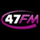 |
|
Ecouter 47fm en live, retrouvez la grille de programmes détaillé de votre radio préférée ainsi que
les infos utiles : téléphone, page facebook officielle et bien plus encore.
47 FM, la radio du Lot et Garonne. Ecoutez vos matchs de foot en direct et soyez au courant des dernières informations locales. Retrouvez les bons plans, les info culturelles, les idées sorties de la région. Mais aussi des jeux, la météo, des chroniques et de la musique bien entendu!
|
| Radio Alouette |
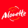 |
Régionale, Musicale |
Alouette est une station régionale privée à dominante musicale très écoutée dans la région du Grand Ouest. Elle émet les hits du moements ainsi que les actualités régionales. Vous retrouvez le programme détaillé ci-dessous ainsi que les infos de contact.
|
| Radio Azur FM |
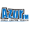 |
Régionale |
Azur FM est une Radio Associative d’Alsace Elle diffuse Playlist de musique , le Top 10, l'actualité et l'agenda , météo, programmes TV, covoiturage, de la région.
|
| Bac FM Radio |
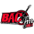 |
Lycéenne, Alternative, Rock |
Bac FM la radio rock des lycéens de Nevers! Depuis 1989. Retrouvez le meilleur du rock et de la musique alternative! Mais c’est aussi du sport, l’actualité, des sciences, de la politique, des émissions culturelles et musicales, le tout animé par des animateurs scolaires!
|
| Beur FM |
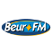 |
Thématique |
Beur FM est une radio thématique française créée en 1992. C’est la radio de la diversité par excellence: un lieu de débats et d’échanges, le tout dans un esprit de tolérance et de pluralité. Retrouvez le meilleur de la musique, des émissions culturelles et de société, et faites le plein de bonnes ondes!.
|
| BFM Business Radio |
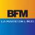 |
Thématique, Economie |
Pour conclure, BFM Business est la radio leader en affinité auprès des hauts pouvoirs de décision et des hauts pouvoirs d’achats plus précisément les fondateurs, PDG, DG, cadres dirigeants, et les foyers les plus riches de France. Elle est écoutée chaque jour par plus de 440 000 auditeurs. Elle offre pour cette raison un support de communication idéal et adapté aux annonceurs souhaitant atteindre cette cible.
|
| Champagne FM |
|
Régionale |
Infos locales et Trafic, c’est sur Champagne FM que ça se passe, 24 heures sur 24. La première radio indépendante de la région Champagne-Ardenne. Retrouvez le meilleur des tubes, les classements de la région, la voyance, etc….
|
| Chante France |
|
Musicale |
Chante France est une station de radio FM parisienne créée en 1994, ne diffusant QUE de la chanson française. Retrouvez le meilleur des tubes français des années 60 jusqu’à aujourd’hui! Faites le plein d’émotions!.
|
| NRJ Radio |
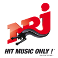 |
|
Ecouter NRJ Direct en live, retrouvez le programme détaillé de votre radio préférée au format pdf ainsi que
les infos utiles : téléphone, page facebook officielle et bien plus encore.
Retrouvez tous les derniers Hits et les numéros 1 dans les classements, les meilleurs DJ du moment et les émissions les plus fun. NRJ la radio “number one”, sur les ondes depuis 1984.
|
| Skyrock FM |
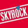 |
Musicale RAP |
Radio Libre à l'origine, Skyrock est une station musicale spécialisée dans le RAP. Sa programmation se distingue par ses animations et jeux avec des concepts originaux et pariticipatifs pour gagner plein de cadeaux : billets de concerts, voyage et des sommes d'argent en cash. Ne perdez plus de temps, écouter le live en direct.
|
| FranceInter Direct |
|
Généraliste |
FranceInter est une radio généraliste par excellence. Les infos y sont programmées toutes les heures
|
| Chérie FM |
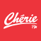 |
Musicale, Pop Love |
Radio Chérie FM, la station musicale pop et variétés. Laissez-vous emporter par les plus belles ballades, seul ou accompagné! Vous pouvez Dédicacer vos plus beaux messages d’amour en direct et écouter les interviews de vos chanteurs préférés sur les ondes de votre radio.
|
| RMC Radio |
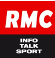 |
|
RMC Info Talk Sport est une radio très populaire en France. Sa grille de programmation principalement composée d'information, de talk, de directs d'évènements sportifs surtout du Football animés par des consultants qui sont des champions ou des entraineurs de renommée.
|
| RTL |
 |
généraliste |
RTL (Acronyme de Radio Télé Luxembourg) est une station très écoutée en France. Elle diffuse des émissions conviviales et proche du public et particulièrement les nouveautés musicales et les grands hits.
|
| Europe 1 |
|
généraliste culturelle |
Radio généraliste d'informations et d'actualité, de débats politiques, culturels, d'économie, de sport en France et à l'international par une équipe jeune et dynamique.
Créée le premierer janvier mille neuf cent cinquante cinq a réussi à capter une audience large. Retrouvez le meilleur de la culture, de la politique, de l’humour, de l’actualité et beaucoup plus, sur nos ondes! Avec nos animateurs de choc, vous ne risquez pas de vous ennuyer!
|
| RFM |
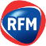 |
|
RFM Radio France Musicale, "la radio couleur" (fondée le 12 juin 1981) est créée dans la vague des radios libres apres l'élection de François Mitterrand a la Présidence de la République. Le slogan de RFM devient "Le meilleur des années 80 a nos jours"..
|